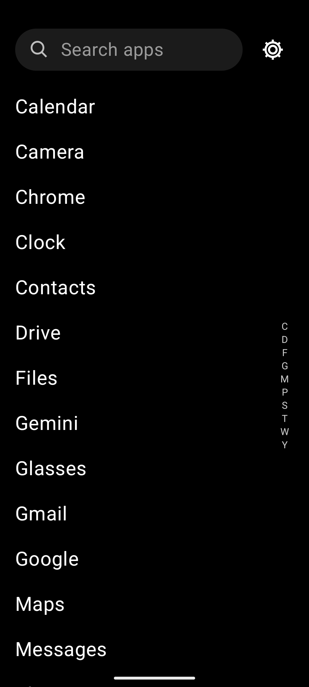
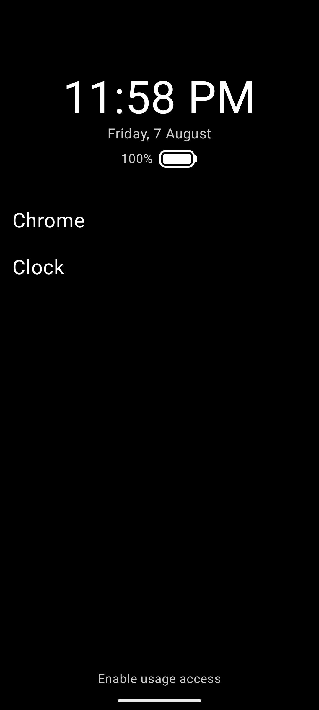
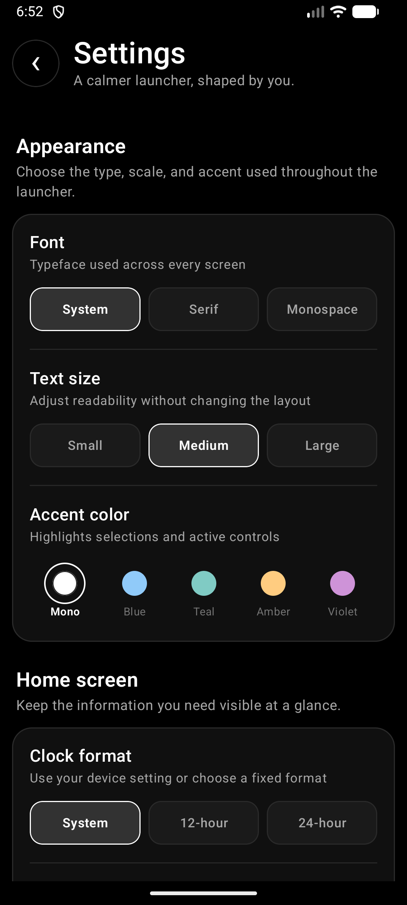

Appearance
Choose a system, serif, or monospace typeface, three text sizes, and a restrained accent color.
A fast, text-first Android launcher that keeps favorite apps close and everything else one swipe away. No ads, no account, and no internet permission.



Replace the icon grid with a quiet, text-first surface. Your favorite apps and folders are easy to reach without turning the rest of your phone into visual clutter.
Search your installed apps, move through an alphabet rail, and get back to the top quickly. The list refreshes when apps are installed or removed.
Minimal Launcher gives you a few useful ways to shape the experience without turning customization into another feed to manage.
Choose a system, serif, or monospace typeface, three text sizes, and a restrained accent color.
Group apps, rename their labels, and decide exactly which items appear on Home.
Move app-list controls, choose the clock format, and only show the Home details you care about.
These are the three surfaces of the launcher: the quiet Home, the complete app list, and the settings that keep both in tune with you.
Minimal Launcher stays intentionally small: no account to create, no server to contact, and no tracking SDK to remove.
The manifest does not declare internet permission. The launcher works entirely without a connection.
Android's Usage Access is only used to show today's on-device foreground-app total on Home.
Home order, labels, folders, and visibility choices are stored with Android DataStore on your device.
Kotlin + Jetpack Compose · Material 3 · AndroidX ViewModel
DataStore Preferences · PackageManager · UsageStats (optional)
One activity, state-driven UI, and no background service.Read the short setup guide, download the latest Android build, or inspect the project on GitHub.